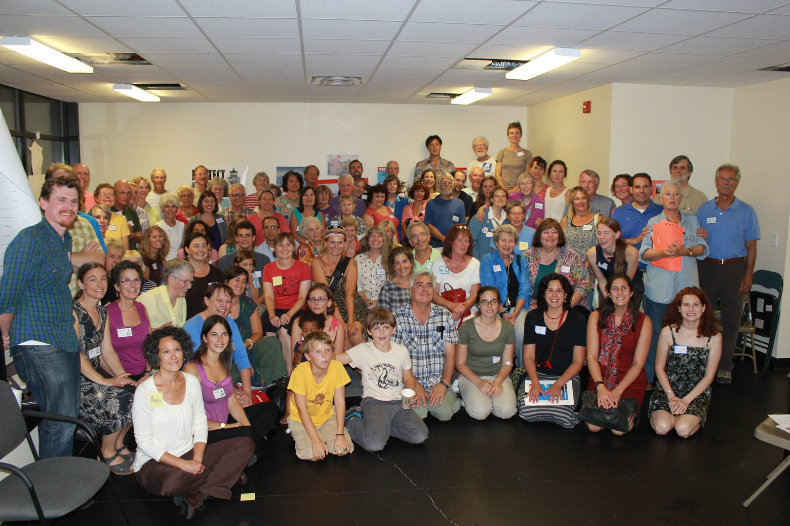
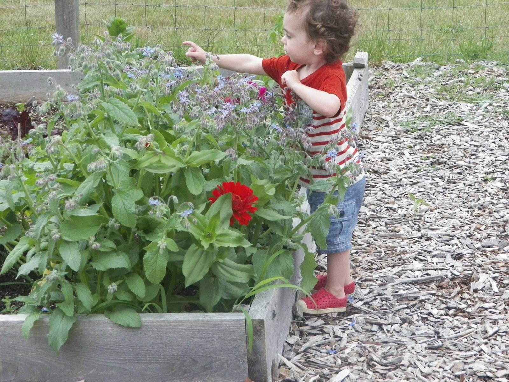
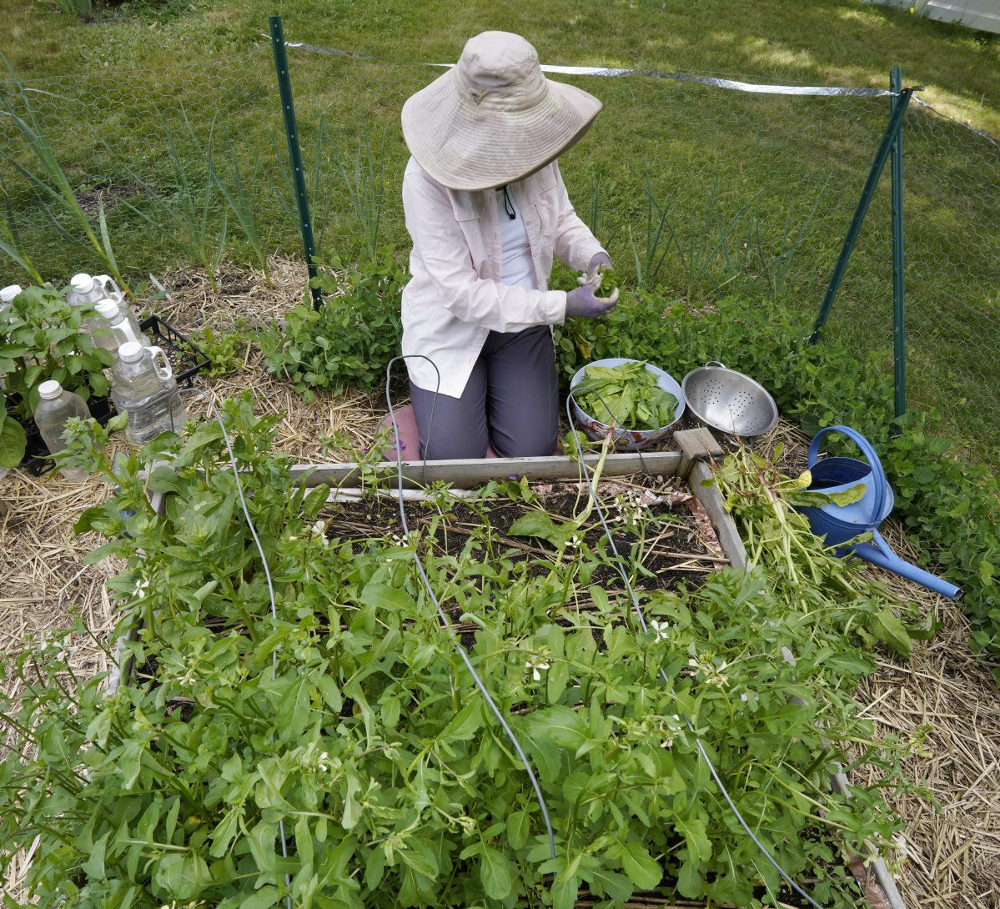
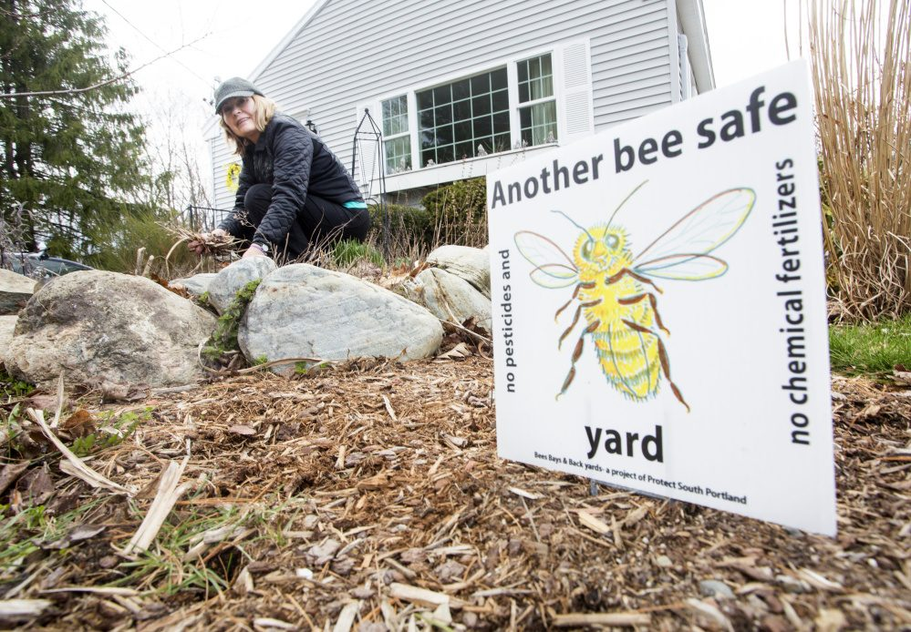
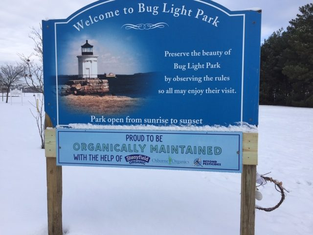

Pesticide Use Ordinance in South Portland
Protect South Portland mobilized the community support that passed this ordinance.
How did this happen?
“Bees, Bays and Backyards”, a committee of PSP, began exploring a possible pesticide ordinance in the spring of 2015. With the help of Beyond Pesticides, a national organization in Washington, and Friends of Casco Bay, a South Portland-area organization, we were able to bring to a City Council Workshop session a full-scale presentation of the issues involved in the use of synthetic pesticides. Experts in the dangers that these substances pose to the health of humans and wildlife were also able to outline solutions to these threats. The presentation paid special attention to pollinators, the bees and butterflies that make our planet fruitful. The Council unanimously got behind the proposal to explore an ordinance that would address this issue. Their first act was to appoint a three-person staff committee to carry out this task.

People power at the root of what we do
- promoted attendance at City Council meetings
- publicized workshops for landscape professionals
- wrote letters to the editors of local papers
- collaborated with beekeepers and organic gardeners
- joined with like-minded citizens of neighboring cities and towns


The final ordinance: an adventure in education
Based on the principle “first do no harm”, South Portland’s ordinance carries no penalties for non-conformance but relies on the good will and good sense of an informed citizenry. As a consequence, the ordinance is rooted in the belief that a rich and widely distributed educational program will be of far greater use in the long run.
For more information about the Ordinance and how to grow a healthy yard and garden, visit:

South Portland gets a grant for organic lawn care
To help educate our residents on our pesticide ordinance and organic lawn care, South Portland has entered into a partnership with Stonyfield Organic to create a natural turf demonstration area at Bug Light Park.
South Portland has the honor of being the first city chosen to receive a $5,000 grant to be used towards purchasing organic inputs or landscaping equipment needed for organic management. On September 29, 2018, Stonyfield Organic held a “field day” at the park with educational booths, food and entertainment. Stonyfield also underwrote the cost of two experts from Osborne Organics and Beyond Pesticides to manage the project.

Goats clearing invasives at Yerxa Park
To comply with South Portland’s Pesticide Ordinance the City’s Parks and Water Resource Departments partnered with the Pesticide Management Advisory Committee (PMAC) and brought in a herd of 8 goats to eat invasive Japanese knotweed and bittersweet that had taken over Yerxa Park, a one-acre underutilized park off the Greenbelt in South Portland.
Using the goats rather than the usual applications of pesticides to kill the invasives is in line with the city's sustainability objectives as well as being economical. The $600 cost to rent the goats for one week comes from the $15,000 Community Development Block Grant for the park.
After the goats finished their clearing in September 2018, the city placed heavy landscaping cloth over the area for about 2 years to complete the destruction of the invasives. Plans called for a trail, native plantings, interpretive educational signs and additional benches to follow.
PMAC used the park as a demonstration project as part of its mandate under the Pesticide Ordinance to provide educational outreach to show citizens alternatives to a reliance on synthetic pesticides, which are banned under the Pesticide Ordinance except for health and safety reasons.
The goats are owned by Scapegoats, a business from Kennebunk. The charismatic, adorable goats developed a following, with many people coming several times a day to watch them perform their work.
Related coverage
- South Portland passes pesticide ban that puts education over enforcement — Kelley Bouchard, Sept. 7, 2016
- Pesticide bans raise question: Can we manage garden pests without chemicals? — Ray Routhier, June 17, 2018
- As debate over pesticides ramps up, let's dispel a number of myths — Jay Feldman & Heather Spalding, June 21, 2016
- Splendor in the longer grass; no need to mow it so short — Rachel Burger, Aug. 20, 2018
- Smart environmentalism means letting grass grow — Rachel Burger, May 29, 2017
- South Portland council rejects oil companies' request for waiver from pesticide ordinance — Juliette Laaka, Apr. 12, 2018
- South Portland gets a herd of hungry goats to clear park of invasive weed — Kelley Bouchard, Sept. 5, 2018